딱 1주일 다이어트 습관
- 프로젝트 설명:다이어트 어플 '딱 1주일 다이어트 습관' 리디자인
- 프로젝트 제작 기간:2021.01.15 ~ 2021.02.03
- 프로젝트 유형:UI / UX 리디자인
01 overview
초기 다이어트의 습관형성을 만들어줄 수 있도록 하루 기록을 체크하도록 도와주는 어플입니다.
사용자의 다양한 목적과 용도에 맞는 효율적인 어플이 될 수 있도록 모바일 사용 환경의 전반적인 개선을
진행하였습니다.
또한 사용층의 사용환경을 고려하여, 간편한 기록을 목표로
비주얼 개선을 진행하였습니다.
02 problem
 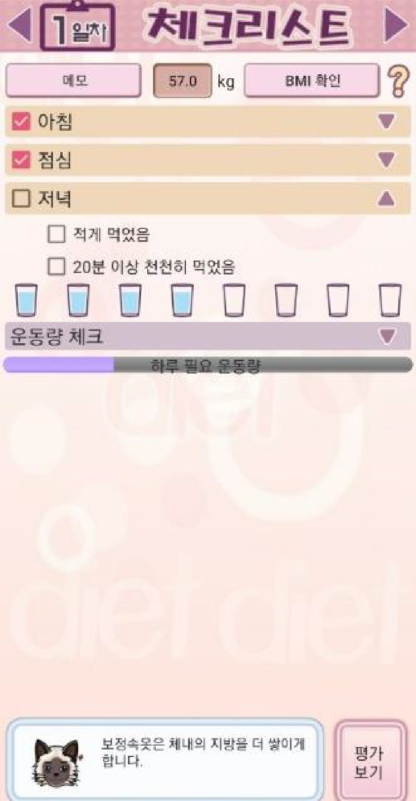
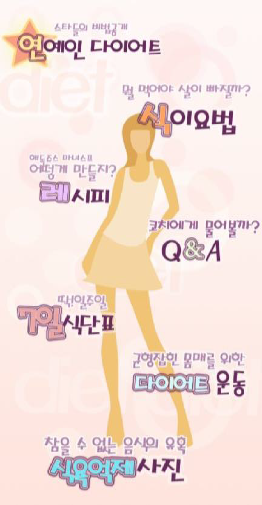
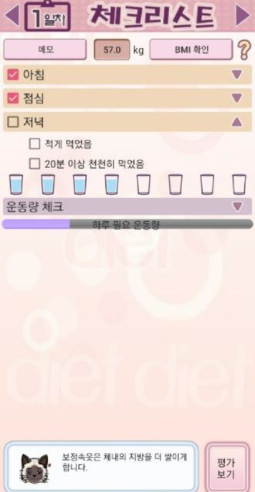
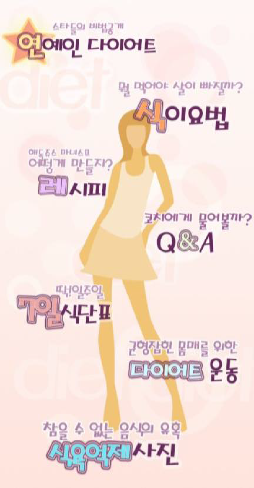
as - is
to - be
- 화려한 디자인 가독성 저하
- 어려운 정보입력
- 일주일 후 자동 기록 리셋
- 심플한 디자인
- 손쉬운 기록
- 통계 기록
03 project goal / vision
작심 일주일 다이어트!
just memo
하루 5분 기록, 나의 다이어트 체크에 필요한 모든 것을 위한 어플
04 design direction
다이어트 어플로 사용자들에게 건강하고 행복한 느낌을 전달할 수 있도록 디자인 방향을 제시하였습니다.
- fast속도,시간,달리기
- positive밝은,건강한,활발한
- easy심플,간단한,가벼움
05 graphic concept
color
-
primary
#fd6e00
-
primary
#ffb74e
-
secondary
#fa9b87
-
secondary
#6acee9
typography
기본 서체로 Apple SD Gothic을 사용하여 깔끔한 느낌을 주어 가독성을 높이고 포인트 부분은 굵기 조절을 하여 강조하였습니다.
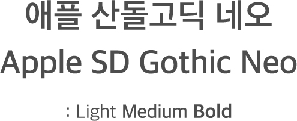06 정보입력
최초 진입 시 기초 정보를 입력하여 사용자의 정보에 맞는 계획을 추천합니다.
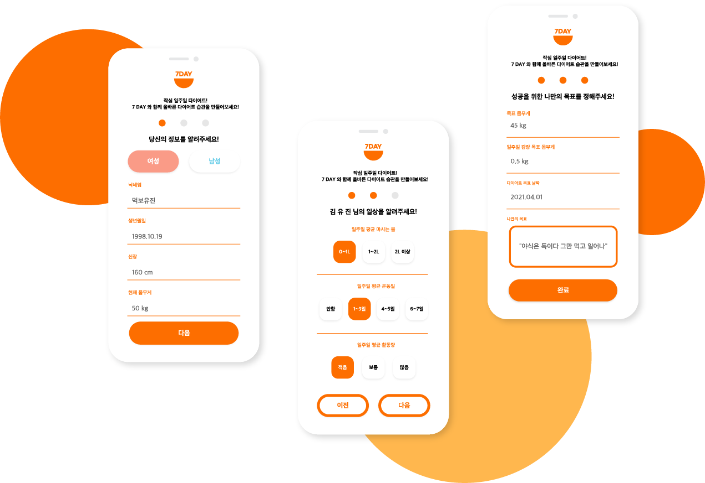07 main page_최소한의 시간으로 기록!
기록을 위해 많은 시간이 필요하지 않도록 빠른 기록이 가능한 플로팅 버튼과 팝업창으로 입력시간을 최소한으로 단축시켰습니다.
- 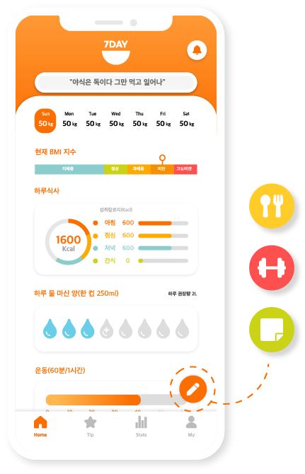
- 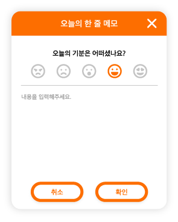
- 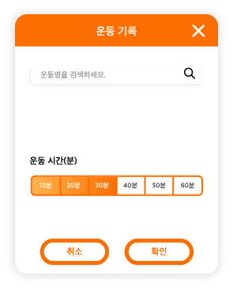
- 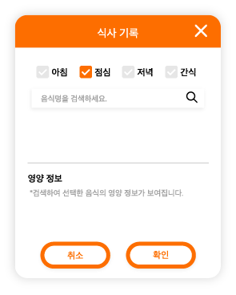
08 통계 자료 / tip_성공적인 다이어트를 위한 help!
일주일동안 실천하였던 다이어트의 기록을 한 달 단위로도 확인할 수 있도록 단기간에서 장기간 지속 가능한 다이어트가 되도록 통계 자료를 제공합니다. 또한 다이어트 기록에 대한 피드백 제공을 하여 다이어트 성공 가능성을 높였습니다.
다이어트 관련한 다양한 Tip을 제공하여 보다 더 건강한 다이어트가 될 수 있도록 식이요법,운동,Q&A를 통해 정보를 제공합니다.
- 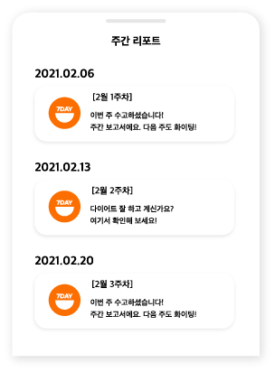
- 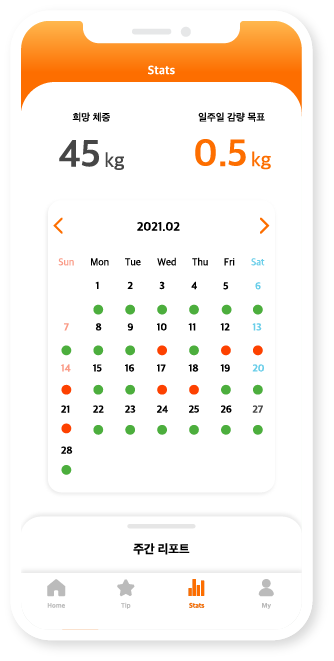
- 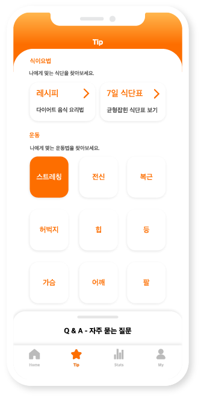
- 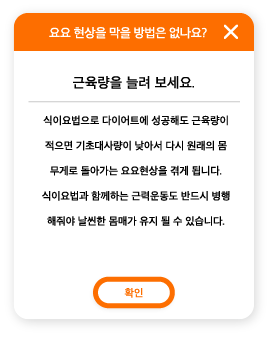
- 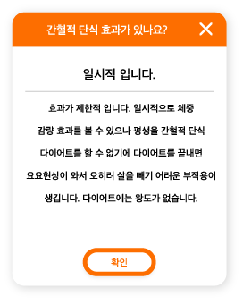
09 alram_언제 어디서나 잊지 않게!
언제 어디서나 하루 필수 생활습관을 만들어주기 위해 알람 기능을 추가하였습니다.
알람을 통해 잊지
않고 물 마시기, 하루 기록 등을 체크할 수 있도록 도움을 줄 수 있습니다.